1.5. Scipy : high-level scientific computing¶
Authors: Adrien Chauve, Andre Espaze, Emmanuelle Gouillart, Gaël Varoquaux, Ralf Gommers
Scipy
The scipy package contains various toolboxes dedicated to common
issues in scientific computing. Its different submodules correspond
to different applications, such as interpolation, integration,
optimization, image processing, statistics, special functions, etc.
scipy can be compared to other standard scientific-computing
libraries, such as the GSL (GNU Scientific Library for C and C++),
or Matlab’s toolboxes. scipy is the core package for scientific
routines in Python; it is meant to operate efficiently on numpy
arrays, so that numpy and scipy work hand in hand.
Before implementing a routine, it is worth checking if the desired
data processing is not already implemented in Scipy. As
non-professional programmers, scientists often tend to re-invent the
wheel, which leads to buggy, non-optimal, difficult-to-share and
unmaintainable code. By contrast, Scipy‘s routines are optimized
and tested, and should therefore be used when possible.
Chapters contents
- File input/output:
scipy.io - Special functions:
scipy.special - Linear algebra operations:
scipy.linalg - Fast Fourier transforms:
scipy.fftpack - Optimization and fit:
scipy.optimize - Statistics and random numbers:
scipy.stats - Interpolation:
scipy.interpolate - Numerical integration:
scipy.integrate - Signal processing:
scipy.signal - Image processing:
scipy.ndimage - Summary exercises on scientific computing
Warning
This tutorial is far from an introduction to numerical computing.
As enumerating the different submodules and functions in scipy would
be very boring, we concentrate instead on a few examples to give a
general idea of how to use scipy for scientific computing.
scipy is composed of task-specific sub-modules:
scipy.cluster |
Vector quantization / Kmeans |
scipy.constants |
Physical and mathematical constants |
scipy.fftpack |
Fourier transform |
scipy.integrate |
Integration routines |
scipy.interpolate |
Interpolation |
scipy.io |
Data input and output |
scipy.linalg |
Linear algebra routines |
scipy.ndimage |
n-dimensional image package |
scipy.odr |
Orthogonal distance regression |
scipy.optimize |
Optimization |
scipy.signal |
Signal processing |
scipy.sparse |
Sparse matrices |
scipy.spatial |
Spatial data structures and algorithms |
scipy.special |
Any special mathematical functions |
scipy.stats |
Statistics |
Tip
They all depend on numpy, but are mostly independent of each
other. The standard way of importing Numpy and these Scipy modules
is:
>>> import numpy as np
>>> from scipy import stats # same for other sub-modules
The main scipy namespace mostly contains functions that are really
numpy functions (try scipy.cos is np.cos). Those are exposed for
historical reasons only; there’s usually no reason to use import
scipy in your code.
1.5.1. File input/output: scipy.io¶
Loading and saving matlab files:
>>> from scipy import io as spio >>> a = np.ones((3, 3)) >>> spio.savemat('file.mat', {'a': a}) # savemat expects a dictionary >>> data = spio.loadmat('file.mat', struct_as_record=True) >>> data['a'] array([[ 1., 1., 1.], [ 1., 1., 1.], [ 1., 1., 1.]])
Reading images:
>>> from scipy import misc >>> misc.imread('fname.png') array(...) >>> # Matplotlib also has a similar function >>> import matplotlib.pyplot as plt >>> plt.imread('fname.png') array(...)
See also:
- Load text files:
numpy.loadtxt()/numpy.savetxt()- Clever loading of text/csv files:
numpy.genfromtxt()/numpy.recfromcsv()- Fast and efficient, but numpy-specific, binary format:
numpy.save()/numpy.load()
1.5.2. Special functions: scipy.special¶
Special functions are transcendental functions. The docstring of the
scipy.special module is well-written, so we won’t list all
functions here. Frequently used ones are:
- Bessel function, such as
scipy.special.jn()(nth integer order Bessel function)- Elliptic function (
scipy.special.ellipj()for the Jacobian elliptic function, ...)- Gamma function:
scipy.special.gamma(), also notescipy.special.gammaln()which will give the log of Gamma to a higher numerical precision.- Erf, the area under a Gaussian curve:
scipy.special.erf()
1.5.3. Linear algebra operations: scipy.linalg¶
The scipy.linalg module provides standard linear algebra
operations, relying on an underlying efficient implementation (BLAS,
LAPACK).
The
scipy.linalg.det()function computes the determinant of a square matrix:>>> from scipy import linalg >>> arr = np.array([[1, 2], ... [3, 4]]) >>> linalg.det(arr) -2.0 >>> arr = np.array([[3, 2], ... [6, 4]]) >>> linalg.det(arr) 0.0 >>> linalg.det(np.ones((3, 4))) Traceback (most recent call last): ... ValueError: expected square matrix
The
scipy.linalg.inv()function computes the inverse of a square matrix:>>> arr = np.array([[1, 2], ... [3, 4]]) >>> iarr = linalg.inv(arr) >>> iarr array([[-2. , 1. ], [ 1.5, -0.5]]) >>> np.allclose(np.dot(arr, iarr), np.eye(2)) True
Finally computing the inverse of a singular matrix (its determinant is zero) will raise
LinAlgError:>>> arr = np.array([[3, 2], ... [6, 4]]) >>> linalg.inv(arr) Traceback (most recent call last): ... ...LinAlgError: singular matrix
More advanced operations are available, for example singular-value decomposition (SVD):
>>> arr = np.arange(9).reshape((3, 3)) + np.diag([1, 0, 1]) >>> uarr, spec, vharr = linalg.svd(arr)
The resulting array spectrum is:
>>> spec array([ 14.88982544, 0.45294236, 0.29654967])
The original matrix can be re-composed by matrix multiplication of the outputs of
svdwithnp.dot:>>> sarr = np.diag(spec) >>> svd_mat = uarr.dot(sarr).dot(vharr) >>> np.allclose(svd_mat, arr) True
SVD is commonly used in statistics and signal processing. Many other standard decompositions (QR, LU, Cholesky, Schur), as well as solvers for linear systems, are available in
scipy.linalg.
1.5.4. Fast Fourier transforms: scipy.fftpack¶
The scipy.fftpack module allows to compute fast Fourier transforms.
As an illustration, a (noisy) input signal may look like:
>>> time_step = 0.02
>>> period = 5.
>>> time_vec = np.arange(0, 20, time_step)
>>> sig = np.sin(2 * np.pi / period * time_vec) + \
... 0.5 * np.random.randn(time_vec.size)
The observer doesn’t know the signal frequency, only
the sampling time step of the signal sig. The signal
is supposed to come from a real function so the Fourier transform
will be symmetric.
The scipy.fftpack.fftfreq() function will generate the sampling frequencies and
scipy.fftpack.fft() will compute the fast Fourier transform:
>>> from scipy import fftpack
>>> sample_freq = fftpack.fftfreq(sig.size, d=time_step)
>>> sig_fft = fftpack.fft(sig)
Because the resulting power is symmetric, only the positive part of the spectrum needs to be used for finding the frequency:
>>> pidxs = np.where(sample_freq > 0)
>>> freqs = sample_freq[pidxs]
>>> power = np.abs(sig_fft)[pidxs]
[source code, hires.png, pdf]
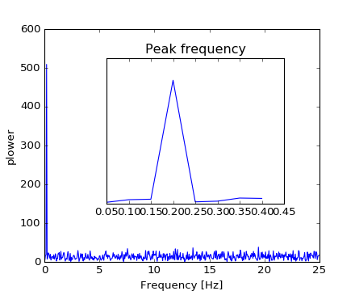{kind=link}
{kind=link}
The signal frequency can be found by:
>>> freq = freqs[power.argmax()]
>>> np.allclose(freq, 1./period) # check that correct freq is found
True
Now the high-frequency noise will be removed from the Fourier transformed signal:
>>> sig_fft[np.abs(sample_freq) > freq] = 0
The resulting filtered signal can be computed by the
scipy.fftpack.ifft() function:
>>> main_sig = fftpack.ifft(sig_fft)
The result can be viewed with:
>>> import pylab as plt
>>> plt.figure()
<matplotlib.figure.Figure object at 0x...>
>>> plt.plot(time_vec, sig)
[<matplotlib.lines.Line2D object at 0x...>]
>>> plt.plot(time_vec, main_sig, linewidth=3)
[<matplotlib.lines.Line2D object at 0x...>]
>>> plt.xlabel('Time [s]')
<matplotlib.text.Text object at 0x...>
>>> plt.ylabel('Amplitude')
<matplotlib.text.Text object at 0x...>
[source code, hires.png, pdf]
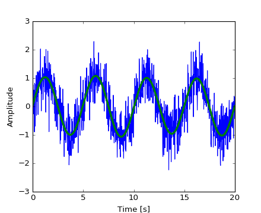{kind=link}
{kind=link}
numpy.fft
Numpy also has an implementation of FFT (numpy.fft). However,
in general the scipy one
should be preferred, as it uses more efficient underlying implementations.
Worked example: Crude periodicity finding
[source code, hires.png, pdf]
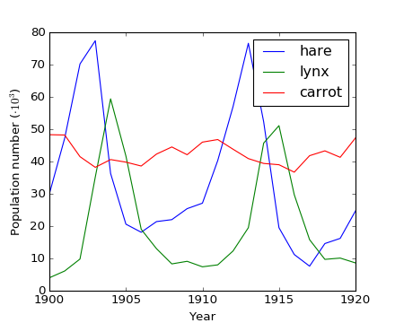{kind=link}
[source code, hires.png, pdf]
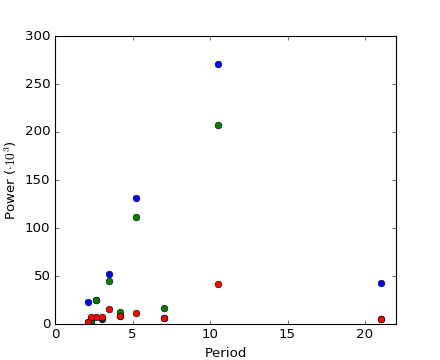{kind=link}
{kind=link}
Exercise: Denoise moon landing image

- Examine the provided image moonlanding.png, which is heavily contaminated with periodic noise. In this exercise, we aim to clean up the noise using the Fast Fourier Transform.
- Load the image using
pylab.imread(). - Find and use the 2-D FFT function in
scipy.fftpack, and plot the spectrum (Fourier transform of) the image. Do you have any trouble visualising the spectrum? If so, why? - The spectrum consists of high and low frequency components. The noise is contained in the high-frequency part of the spectrum, so set some of those components to zero (use array slicing).
- Apply the inverse Fourier transform to see the resulting image.
1.5.5. Optimization and fit: scipy.optimize¶
Optimization is the problem of finding a numerical solution to a minimization or equality.
The scipy.optimize module provides useful algorithms for function
minimization (scalar or multi-dimensional), curve fitting and root
finding.
>>> from scipy import optimize
Finding the minimum of a scalar function
Let’s define the following function:
>>> def f(x):
... return x**2 + 10*np.sin(x)
and plot it:
>>> x = np.arange(-10, 10, 0.1)
>>> plt.plot(x, f(x))
>>> plt.show()
[source code, hires.png, pdf]
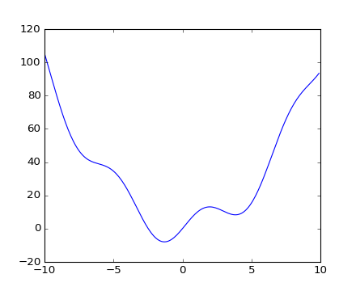{kind=link}
This function has a global minimum around -1.3 and a local minimum around 3.8.
The general and efficient way to find a minimum for this function is to conduct a gradient descent starting from a given initial point. The BFGS algorithm is a good way of doing this:
>>> optimize.fmin_bfgs(f, 0)
Optimization terminated successfully.
Current function value: -7.945823
Iterations: 5
Function evaluations: 24
Gradient evaluations: 8
array([-1.30644003])
A possible issue with this approach is that, if the function has local minima the algorithm may find these local minima instead of the global minimum depending on the initial point:
>>> optimize.fmin_bfgs(f, 3, disp=0)
array([ 3.83746663])
If we don’t know the neighborhood of the global minimum to choose the initial
point, we need to resort to costlier global optimization. To find the global
minimum, we use scipy.optimize.basinhopping() (which combines a local
optimizer with stochastic sampling of starting points for the local optimizer):
New in version 0.12.0: basinhopping was added in version 0.12.0 of Scipy
>>> optimize.basinhopping(f, 0)
nfev: 1725
minimization_failures: 0
fun: -7.9458233756152845
x: array([-1.30644001])
message: ['requested number of basinhopping iterations completed successfully']
njev: 575
nit: 100
Another available (but much less efficient) global optimizer is
scipy.optimize.brute() (brute force optimization on a grid).
More efficient algorithms
for different classes of global optimization problems exist, but this is out of
the scope of scipy. Some useful packages for global optimization are
OpenOpt, IPOPT, PyGMO and PyEvolve.
Note
scipy used to contain the routine anneal, it has been deprecated since
SciPy 0.14.0 and removed in SciPy 0.16.0.
To find the local minimum, let’s constraint the variable to the interval
(0, 10) using scipy.optimize.fminbound():
>>> xmin_local = optimize.fminbound(f, 0, 10)
>>> xmin_local
3.8374671...
Note
Finding minima of function is discussed in more details in the advanced chapter: Mathematical optimization: finding minima of functions.
Finding the roots of a scalar function
To find a root, i.e. a point where 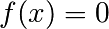, of the function 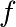 above
we can use for example scipy.optimize.fsolve():
>>> root = optimize.fsolve(f, 1) # our initial guess is 1
>>> root
array([ 0.])
Note that only one root is found. Inspecting the plot of reveals that there is a second root around -2.5. We find the exact value of it by adjusting our initial guess:
>>> root2 = optimize.fsolve(f, -2.5)
>>> root2
array([-2.47948183])
Curve fitting
Suppose we have data sampled from with some noise:
>>> xdata = np.linspace(-10, 10, num=20)
>>> ydata = f(xdata) + np.random.randn(xdata.size)
Now if we know the functional form of the function from which the samples were drawn (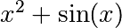 in this case) but not the amplitudes of the terms, we can find those by least squares curve fitting. First we have to define the function to fit:
>>> def f2(x, a, b):
... return a*x**2 + b*np.sin(x)
Then we can use scipy.optimize.curve_fit() to find 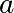 and 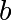:
>>> guess = [2, 2]
>>> params, params_covariance = optimize.curve_fit(f2, xdata, ydata, guess)
>>> params
array([ 0.99667386, 10.17808313])
Now we have found the minima and roots of f and used curve fitting on it,
we put all those resuls together in a single plot:
[source code, hires.png, pdf]
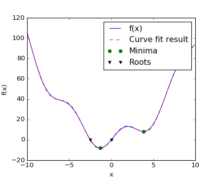{kind=link}
Note
In Scipy >= 0.11 unified interfaces to all minimization and root
finding algorithms are available: scipy.optimize.minimize(),
scipy.optimize.minimize_scalar() and
scipy.optimize.root(). They allow comparing various algorithms
easily through the method keyword.
You can find algorithms with the same functionalities for multi-dimensional
problems in scipy.optimize.
Exercise: Curve fitting of temperature data
The temperature extremes in Alaska for each month, starting in January, are given by (in degrees Celcius):
max: 17, 19, 21, 28, 33, 38, 37, 37, 31, 23, 19, 18 min: -62, -59, -56, -46, -32, -18, -9, -13, -25, -46, -52, -58
- Plot these temperature extremes.
- Define a function that can describe min and max temperatures. Hint: this function has to have a period of 1 year. Hint: include a time offset.
- Fit this function to the data with
scipy.optimize.curve_fit().- Plot the result. Is the fit reasonable? If not, why?
- Is the time offset for min and max temperatures the same within the fit accuracy?
Exercise: 2-D minimization
[source code, hires.png, pdf]
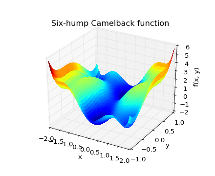The six-hump camelback function
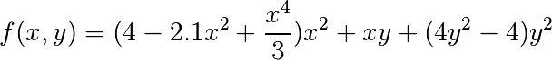
has multiple global and local minima. Find the global minima of this function.
Hints:
- Variables can be restricted to 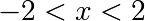 and 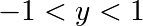.
- Use
numpy.meshgrid()andpylab.imshow()to find visually the regions.- Use
scipy.optimize.fmin_bfgs()or another multi-dimensional minimizer.How many global minima are there, and what is the function value at those points? What happens for an initial guess of 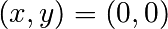 ?
{kind=link}
See the summary exercise on Non linear least squares curve fitting: application to point extraction in topographical lidar data for another, more advanced example.
1.5.6. Statistics and random numbers: scipy.stats¶
The module scipy.stats contains statistical tools and probabilistic
descriptions of random processes. Random number generators for various
random process can be found in numpy.random.
1.5.6.1. Histogram and probability density function¶
Given observations of a random process, their histogram is an estimator of the random process’s PDF (probability density function):
>>> a = np.random.normal(size=1000)
>>> bins = np.arange(-4, 5)
>>> bins
array([-4, -3, -2, -1, 0, 1, 2, 3, 4])
>>> histogram = np.histogram(a, bins=bins, normed=True)[0]
>>> bins = 0.5*(bins[1:] + bins[:-1])
>>> bins
array([-3.5, -2.5, -1.5, -0.5, 0.5, 1.5, 2.5, 3.5])
>>> from scipy import stats
>>> b = stats.norm.pdf(bins) # norm is a distribution
>>> plt.plot(bins, histogram)
[<matplotlib.lines.Line2D object at ...>]
>>> plt.plot(bins, b)
[<matplotlib.lines.Line2D object at ...>]
[source code, hires.png, pdf]
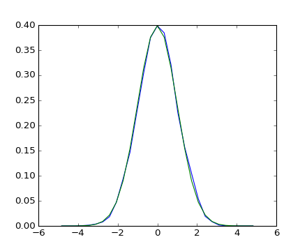{kind=link}
{kind=link}
If we know that the random process belongs to a given family of random processes, such as normal processes, we can do a maximum-likelihood fit of the observations to estimate the parameters of the underlying distribution. Here we fit a normal process to the observed data:
>>> loc, std = stats.norm.fit(a)
>>> loc
0.0314345570...
>>> std
0.9778613090...
Exercise: Probability distributions
Generate 1000 random variates from a gamma distribution with a shape parameter of 1, then plot a histogram from those samples. Can you plot the pdf on top (it should match)?
Extra: the distributions have a number of useful methods. Explore them by
reading the docstring or by using IPython tab completion. Can you find the
shape parameter of 1 back by using the fit method on your random
variates?
1.5.6.2. Percentiles¶
The median is the value with half of the observations below, and half above:
>>> np.median(a)
0.04041769593...
It is also called the percentile 50, because 50% of the observation are below it:
>>> stats.scoreatpercentile(a, 50)
0.0404176959...
Similarly, we can calculate the percentile 90:
>>> stats.scoreatpercentile(a, 90)
1.3185699120...
The percentile is an estimator of the CDF: cumulative distribution function.
1.5.6.3. Statistical tests¶
A statistical test is a decision indicator. For instance, if we have two sets of observations, that we assume are generated from Gaussian processes, we can use a T-test to decide whether the two sets of observations are significantly different:
>>> a = np.random.normal(0, 1, size=100)
>>> b = np.random.normal(1, 1, size=10)
>>> stats.ttest_ind(a, b)
(array(-3.177574054...), 0.0019370639...)
Tip
The resulting output is composed of:
- The T statistic value: it is a number the sign of which is proportional to the difference between the two random processes and the magnitude is related to the significance of this difference.
- the p value: the probability of both processes being identical. If it is close to 1, the two process are almost certainly identical. The closer it is to zero, the more likely it is that the processes have different means.
See also
The chapter on statistics introduces much more elaborate tools for statistical testing and statistical data loading and visualization outside of scipy.
1.5.7. Interpolation: scipy.interpolate¶
The scipy.interpolate is useful for fitting a function from experimental
data and thus evaluating points where no measure exists. The module is based
on the FITPACK Fortran subroutines from the netlib project.
By imagining experimental data close to a sine function:
>>> measured_time = np.linspace(0, 1, 10)
>>> noise = (np.random.random(10)*2 - 1) * 1e-1
>>> measures = np.sin(2 * np.pi * measured_time) + noise
The scipy.interpolate.interp1d class can build a linear
interpolation function:
>>> from scipy.interpolate import interp1d
>>> linear_interp = interp1d(measured_time, measures)
Then the scipy.interpolate.linear_interp instance needs to be
evaluated at the time of interest:
>>> computed_time = np.linspace(0, 1, 50)
>>> linear_results = linear_interp(computed_time)
A cubic interpolation can also be selected by providing the kind optional
keyword argument:
>>> cubic_interp = interp1d(measured_time, measures, kind='cubic')
>>> cubic_results = cubic_interp(computed_time)
The results are now gathered on the following Matplotlib figure:
[source code, hires.png, pdf]
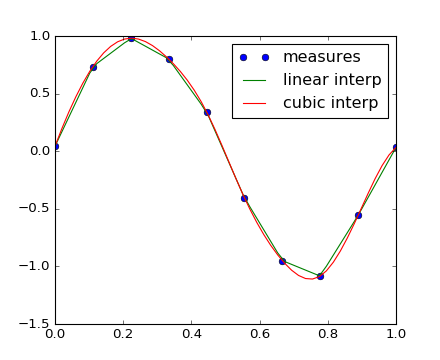{kind=link}
scipy.interpolate.interp2d is similar to
scipy.interpolate.interp1d, but for 2-D arrays. Note that for
the interp family, the computed time must stay within the measured
time range. See the summary exercise on
Maximum wind speed prediction at the Sprogø station for a more advance spline
interpolation example.
1.5.8. Numerical integration: scipy.integrate¶
The most generic integration routine is scipy.integrate.quad():
>>> from scipy.integrate import quad
>>> res, err = quad(np.sin, 0, np.pi/2)
>>> np.allclose(res, 1)
True
>>> np.allclose(err, 1 - res)
True
Others integration schemes are available with fixed_quad,
quadrature, romberg.
scipy.integrate also features routines for integrating Ordinary
Differential Equations (ODE). In particular, scipy.integrate.odeint()
is a general-purpose integrator using LSODA (Livermore Solver for
Ordinary Differential equations with Automatic method switching
for stiff and non-stiff problems), see the ODEPACK Fortran library
for more details.
odeint solves first-order ODE systems of the form:
dy/dt = rhs(y1, y2, .., t0,...)
As an introduction, let us solve the ODE 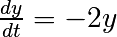 between 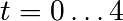, with the initial condition 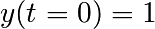. First the function computing the derivative of the position needs to be defined:
>>> def calc_derivative(ypos, time, counter_arr):
... counter_arr += 1
... return -2 * ypos
...
An extra argument counter_arr has been added to illustrate that the
function may be called several times for a single time step, until solver
convergence. The counter array is defined as:
>>> counter = np.zeros((1,), dtype=np.uint16)
The trajectory will now be computed:
>>> from scipy.integrate import odeint
>>> time_vec = np.linspace(0, 4, 40)
>>> yvec, info = odeint(calc_derivative, 1, time_vec,
... args=(counter,), full_output=True)
Thus the derivative function has been called more than 40 times (which was the number of time steps):
>>> counter
array([129], dtype=uint16)
and the cumulative number of iterations for each of the 10 first time steps can be obtained by:
>>> info['nfe'][:10]
array([31, 35, 43, 49, 53, 57, 59, 63, 65, 69], dtype=int32)
Note that the solver requires more iterations for the first time step.
The solution yvec for the trajectory can now be plotted:
[source code, hires.png, pdf]
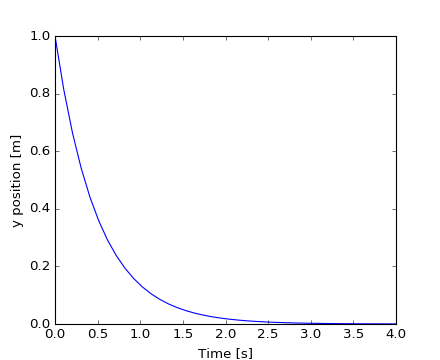
{kind=link}
{kind=link}
Another example with scipy.integrate.odeint() will be a damped
spring-mass oscillator (2nd order oscillator).
The position of a mass attached to a spring obeys the 2nd order ODE
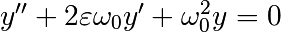 with
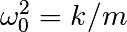 with 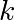 the spring constant, 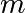 the mass
and 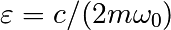 with 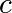 the damping coefficient.
For this example, we choose the parameters as:
>>> mass = 0.5 # kg
>>> kspring = 4 # N/m
>>> cviscous = 0.4 # N s/m
so the system will be underdamped, because:
>>> eps = cviscous / (2 * mass * np.sqrt(kspring/mass))
>>> eps < 1
True
For the scipy.integrate.odeint() solver the 2nd order equation
needs to be transformed in a system of two first-order equations for
the vector 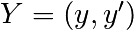. It will be convenient to define
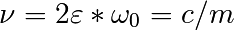 and 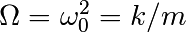:
>>> nu_coef = cviscous / mass # nu
>>> om_coef = kspring / mass # Omega
Thus the function will calculate the velocity and acceleration by:
>>> def calc_deri(yvec, time, nu, om):
... return (yvec[1], -nu * yvec[1] - om * yvec[0])
...
>>> time_vec = np.linspace(0, 10, 100)
>>> yinit = (1, 0)
>>> yarr = odeint(calc_deri, yinit, time_vec, args=(nu_coef, om_coef))
The final position and velocity are shown on the following Matplotlib figure:
[source code, hires.png, pdf]
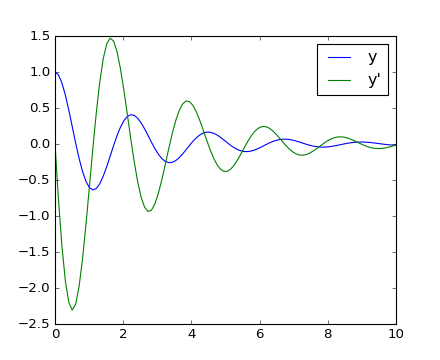{kind=link}
{kind=link}
These two examples were only Ordinary Differential Equations (ODE). However, there is no Partial Differential Equations (PDE) solver in Scipy. Some Python packages for solving PDE’s are available, such as fipy or SfePy.
1.5.9. Signal processing: scipy.signal¶
>>> from scipy import signal
scipy.signal.detrend(): remove linear trend from signal:>>> t = np.linspace(0, 5, 100) >>> x = t + np.random.normal(size=100) >>> plt.plot(t, x, linewidth=3) [<matplotlib.lines.Line2D object at ...>] >>> plt.plot(t, signal.detrend(x), linewidth=3) [<matplotlib.lines.Line2D object at ...>]
[source code, hires.png, pdf]
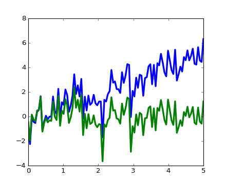scipy.signal.resample(): resample a signal to n points using FFT.>>> t = np.linspace(0, 5, 100) >>> x = np.sin(t) >>> plt.plot(t, x, linewidth=3) [<matplotlib.lines.Line2D object at ...>] >>> plt.plot(t[::2], signal.resample(x, 50), 'ko') [<matplotlib.lines.Line2D object at ...>]
[source code, hires.png, pdf]
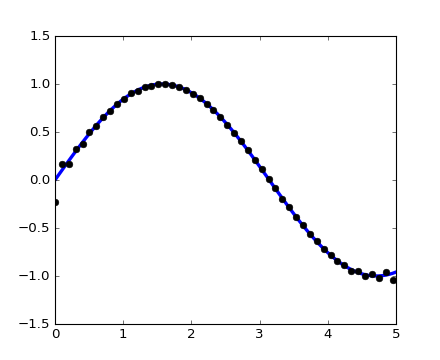scipy.signalhas many window functions:scipy.signal.hamming(),scipy.signal.bartlett(),scipy.signal.blackman()...scipy.signalhas filtering (median filterscipy.signal.medfilt(), Wienerscipy.signal.wiener()), but we will discuss this in the image section.
{kind=link}
{kind=link}
{kind=link}
{kind=link}
1.5.10. Image processing: scipy.ndimage¶
The submodule dedicated to image processing in scipy is scipy.ndimage.
>>> from scipy import ndimage
Image processing routines may be sorted according to the category of processing they perform.
1.5.10.1. Geometrical transformations on images¶
Changing orientation, resolution, ..
>>> from scipy import misc
>>> face = misc.face(gray=True)
>>> shifted_face = ndimage.shift(face, (50, 50))
>>> shifted_face2 = ndimage.shift(face, (50, 50), mode='nearest')
>>> rotated_face = ndimage.rotate(face, 30)
>>> cropped_face = face[50:-50, 50:-50]
>>> zoomed_face = ndimage.zoom(face, 2)
>>> zoomed_face.shape
(1536, 2048)

>>> plt.subplot(151)
<matplotlib.axes._subplots.AxesSubplot object at 0x...>
>>> plt.imshow(shifted_face, cmap=plt.cm.gray)
<matplotlib.image.AxesImage object at 0x...>
>>> plt.axis('off')
(-0.5, 1023.5, 767.5, -0.5)
>>> # etc.
1.5.10.2. Image filtering¶
>>> from scipy import misc
>>> face = misc.face(gray=True)
>>> face = face[:512, -512:] # crop out square on right
>>> import numpy as np
>>> noisy_face = np.copy(face).astype(np.float)
>>> noisy_face += face.std() * 0.5 * np.random.standard_normal(face.shape)
>>> blurred_face = ndimage.gaussian_filter(noisy_face, sigma=3)
>>> median_face = ndimage.median_filter(noisy_face, size=5)
>>> from scipy import signal
>>> wiener_face = signal.wiener(noisy_face, (5, 5))
{kind=link}
Many other filters in scipy.ndimage.filters and scipy.signal
can be applied to images.
Exercise
Compare histograms for the different filtered images.
1.5.10.3. Mathematical morphology¶
Mathematical morphology is a mathematical theory that stems from set theory. It characterizes and transforms geometrical structures. Binary (black and white) images, in particular, can be transformed using this theory: the sets to be transformed are the sets of neighboring non-zero-valued pixels. The theory was also extended to gray-valued images.

Elementary mathematical-morphology operations use a structuring element in order to modify other geometrical structures.
Let us first generate a structuring element
>>> el = ndimage.generate_binary_structure(2, 1)
>>> el
array([[False, True, False],
[...True, True, True],
[False, True, False]], dtype=bool)
>>> el.astype(np.int)
array([[0, 1, 0],
[1, 1, 1],
[0, 1, 0]])
Erosion
>>> a = np.zeros((7, 7), dtype=np.int) >>> a[1:6, 2:5] = 1 >>> a array([[0, 0, 0, 0, 0, 0, 0], [0, 0, 1, 1, 1, 0, 0], [0, 0, 1, 1, 1, 0, 0], [0, 0, 1, 1, 1, 0, 0], [0, 0, 1, 1, 1, 0, 0], [0, 0, 1, 1, 1, 0, 0], [0, 0, 0, 0, 0, 0, 0]]) >>> ndimage.binary_erosion(a).astype(a.dtype) array([[0, 0, 0, 0, 0, 0, 0], [0, 0, 0, 0, 0, 0, 0], [0, 0, 0, 1, 0, 0, 0], [0, 0, 0, 1, 0, 0, 0], [0, 0, 0, 1, 0, 0, 0], [0, 0, 0, 0, 0, 0, 0], [0, 0, 0, 0, 0, 0, 0]]) >>> #Erosion removes objects smaller than the structure >>> ndimage.binary_erosion(a, structure=np.ones((5,5))).astype(a.dtype) array([[0, 0, 0, 0, 0, 0, 0], [0, 0, 0, 0, 0, 0, 0], [0, 0, 0, 0, 0, 0, 0], [0, 0, 0, 0, 0, 0, 0], [0, 0, 0, 0, 0, 0, 0], [0, 0, 0, 0, 0, 0, 0], [0, 0, 0, 0, 0, 0, 0]])
Dilation
>>> a = np.zeros((5, 5)) >>> a[2, 2] = 1 >>> a array([[ 0., 0., 0., 0., 0.], [ 0., 0., 0., 0., 0.], [ 0., 0., 1., 0., 0.], [ 0., 0., 0., 0., 0.], [ 0., 0., 0., 0., 0.]]) >>> ndimage.binary_dilation(a).astype(a.dtype) array([[ 0., 0., 0., 0., 0.], [ 0., 0., 1., 0., 0.], [ 0., 1., 1., 1., 0.], [ 0., 0., 1., 0., 0.], [ 0., 0., 0., 0., 0.]])
Opening
>>> a = np.zeros((5, 5), dtype=np.int) >>> a[1:4, 1:4] = 1 >>> a[4, 4] = 1 >>> a array([[0, 0, 0, 0, 0], [0, 1, 1, 1, 0], [0, 1, 1, 1, 0], [0, 1, 1, 1, 0], [0, 0, 0, 0, 1]]) >>> # Opening removes small objects >>> ndimage.binary_opening(a, structure=np.ones((3, 3))).astype(np.int) array([[0, 0, 0, 0, 0], [0, 1, 1, 1, 0], [0, 1, 1, 1, 0], [0, 1, 1, 1, 0], [0, 0, 0, 0, 0]]) >>> # Opening can also smooth corners >>> ndimage.binary_opening(a).astype(np.int) array([[0, 0, 0, 0, 0], [0, 0, 1, 0, 0], [0, 1, 1, 1, 0], [0, 0, 1, 0, 0], [0, 0, 0, 0, 0]])
Closing:
ndimage.binary_closing
Exercise
Check that opening amounts to eroding, then dilating.
An opening operation removes small structures, while a closing operation fills small holes. Such operations can therefore be used to “clean” an image.
>>> a = np.zeros((50, 50))
>>> a[10:-10, 10:-10] = 1
>>> a += 0.25 * np.random.standard_normal(a.shape)
>>> mask = a>=0.5
>>> opened_mask = ndimage.binary_opening(mask)
>>> closed_mask = ndimage.binary_closing(opened_mask)
{kind=link}
Exercise
Check that the area of the reconstructed square is smaller than the area of the initial square. (The opposite would occur if the closing step was performed before the opening).
For gray-valued images, eroding (resp. dilating) amounts to replacing a pixel by the minimal (resp. maximal) value among pixels covered by the structuring element centered on the pixel of interest.
>>> a = np.zeros((7, 7), dtype=np.int)
>>> a[1:6, 1:6] = 3
>>> a[4, 4] = 2; a[2, 3] = 1
>>> a
array([[0, 0, 0, 0, 0, 0, 0],
[0, 3, 3, 3, 3, 3, 0],
[0, 3, 3, 1, 3, 3, 0],
[0, 3, 3, 3, 3, 3, 0],
[0, 3, 3, 3, 2, 3, 0],
[0, 3, 3, 3, 3, 3, 0],
[0, 0, 0, 0, 0, 0, 0]])
>>> ndimage.grey_erosion(a, size=(3, 3))
array([[0, 0, 0, 0, 0, 0, 0],
[0, 0, 0, 0, 0, 0, 0],
[0, 0, 1, 1, 1, 0, 0],
[0, 0, 1, 1, 1, 0, 0],
[0, 0, 3, 2, 2, 0, 0],
[0, 0, 0, 0, 0, 0, 0],
[0, 0, 0, 0, 0, 0, 0]])
1.5.10.4. Measurements on images¶
Let us first generate a nice synthetic binary image.
>>> x, y = np.indices((100, 100))
>>> sig = np.sin(2*np.pi*x/50.) * np.sin(2*np.pi*y/50.) * (1+x*y/50.**2)**2
>>> mask = sig > 1
Now we look for various information about the objects in the image:
>>> labels, nb = ndimage.label(mask)
>>> nb
8
>>> areas = ndimage.sum(mask, labels, range(1, labels.max()+1))
>>> areas
array([ 190., 45., 424., 278., 459., 190., 549., 424.])
>>> maxima = ndimage.maximum(sig, labels, range(1, labels.max()+1))
>>> maxima
array([ 1.80238238, 1.13527605, 5.51954079, 2.49611818,
6.71673619, 1.80238238, 16.76547217, 5.51954079])
>>> ndimage.find_objects(labels==4)
[(slice(30L, 48L, None), slice(30L, 48L, None))]
>>> sl = ndimage.find_objects(labels==4)
>>> import pylab as pl
>>> pl.imshow(sig[sl[0]])
<matplotlib.image.AxesImage object at ...>
{kind=link}
See the summary exercise on Image processing application: counting bubbles and unmolten grains for a more advanced example.
1.5.11. Summary exercises on scientific computing¶
The summary exercises use mainly Numpy, Scipy and Matplotlib. They provide some real-life examples of scientific computing with Python. Now that the basics of working with Numpy and Scipy have been introduced, the interested user is invited to try these exercises.
Exercises:
Proposed solutions: